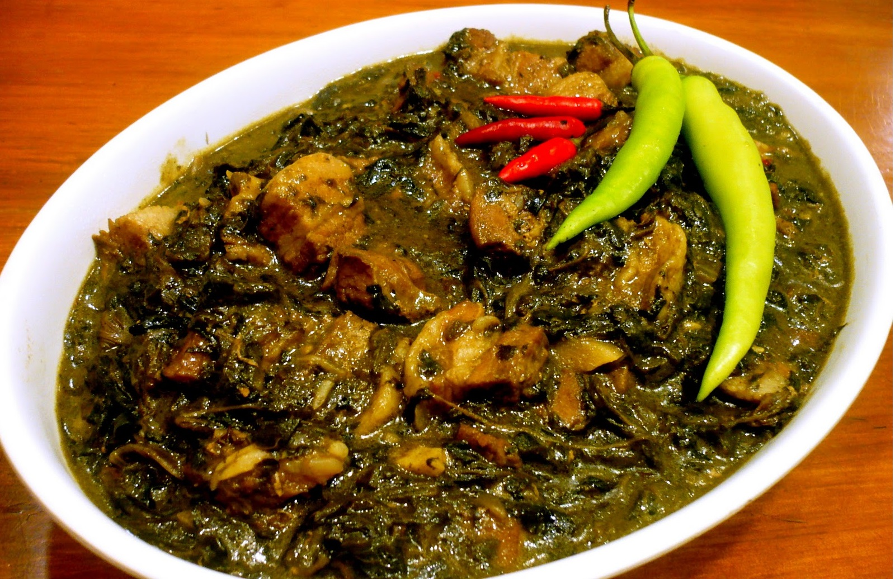

|

|
Description
Laing is a Filipino dish of shredded or whole taro leaves with meat or seafood cooked in thick coconut milk spiced with labuyo chili, lemongrass, garlic, shallots, ginger, and shrimp paste. It originates from the Bicol Region, where it is known simply as pinangat.
Ingredients
2 ounces dried gabi leaves
2 lemongrass stalks
1 tablespoon canola oil
1 onion, peeled and chopped
4 cloves garlic, peeled and minced
1 thumb-size ginger, peeled and minced
1 pound pork belly, diced
pepper to taste
1 tablespoon shrimp paste
4 cups coconut milk
8 Thai chili peppers, chopped
1 cup coconut cream
salt to taste
Procedure
1. Go through the dried leaves, and shred into pieces. Inspect for any other stray leaves accidentally mixed in during the drying process and discard.
2. Remove and discard the dark green layers of the lemongrass until you get to the lighter green part. Using the back of a knife, pound ends of stalks to release flavor and then chop.
3. In a wide pan over medium heat, heat oil. Add onions, garlic, and ginger and cook, stirring occasionally, until softened and aromatic.
4. Add pork and cook until lightly browned. Season with pepper to taste.
5. Add shrimp paste and cook, stirring occasionally, for about 1 to 2 minutes.
6. Add coconut milk and bring to a simmer.
7. Add lemongrass and chili peppers.
8. Add gabi leaves and with the spoon, push down into the liquid until moistened. Do not stir for the first 15 to 20 minutes.
9. Lower heat, cover, and cook for about 25 to 30 minutes or until pork is fully cooked and leaves have softened.
10. Add coconut cream and continue to cook for about 10 to 15 minutes or mixture is almost dry and begins to render fat. Season with salt to taste.
Price
P40 / serving
|